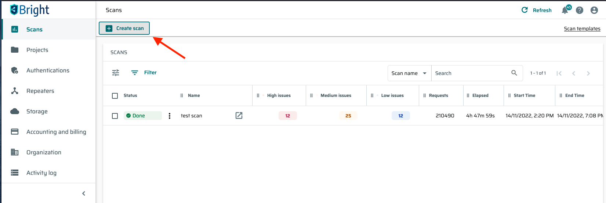
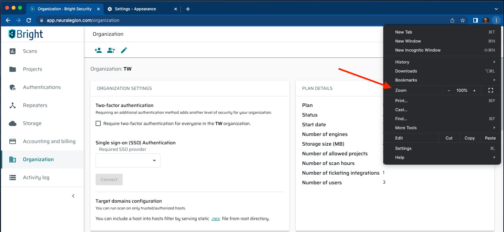
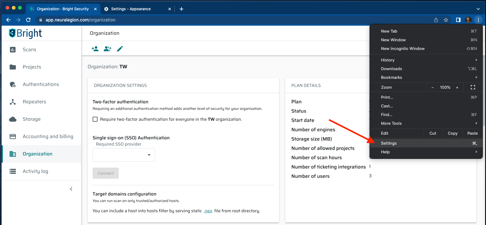

Accessibility
Bright makes a lot of efforts to ensure that all categories of users can use the application. The Bright app complies WCAG 2.0 requirements and provides the following accessibility features:
-
Compliness the contrast requirements
-
The ability to fully control the application using the keyboard, without using the mouse
-
Compatibility with screen-readers (e.x. Windows Narrator and Apple VoiceOver)
-
Possibility to increase the page zoom up to 200%
-
Ability to increase font size through browser settings to Large and Very Large
High-contrast themes
The Bright app meets the contrast requirements of WCAG 2.0 to allow people with low vision to use the app fully. The contrast is adapted for both light and dark themes.
Fully keyboard input
Bright supports full-fledged keyboard control of the application without using the mouse. The control is carried out through a focus element, which can be moved over all page elements. To start using this mode, you need to select any element using the keyboard by pressing TAB. The following keys are used to control the focus element:
-
TAB - Selection of the next element
-
Arrows - Changing the parameters of the selected element
-
ENTER - Confirmation of the adjustment
-
ESC - Closing the pop-up window and returning to the main page

Screen-readers compatibility
To learn how to use Windows Narrator, see the Windows Narrator guide.
To learn how to use Apple VoiceOver, see the Apple VoiceOver guide.
Font size
The Bright app provides several ways of changing the font size.
-
You can adjust the font size by simply changing the page zoom.
| The Bright app supports zooming up to 200%. To do this, you can hold the Control (Command) button and then scroll the mouse wheel. Also, you can enter the main browser menu and adjust zoom there. |

2. Also, you can use your browser settings to change the font size to Large and Very large. First, open the Settings page.

Then click the Appearance tab and select the preferable font size. Also, here you can adjust the page zoom.